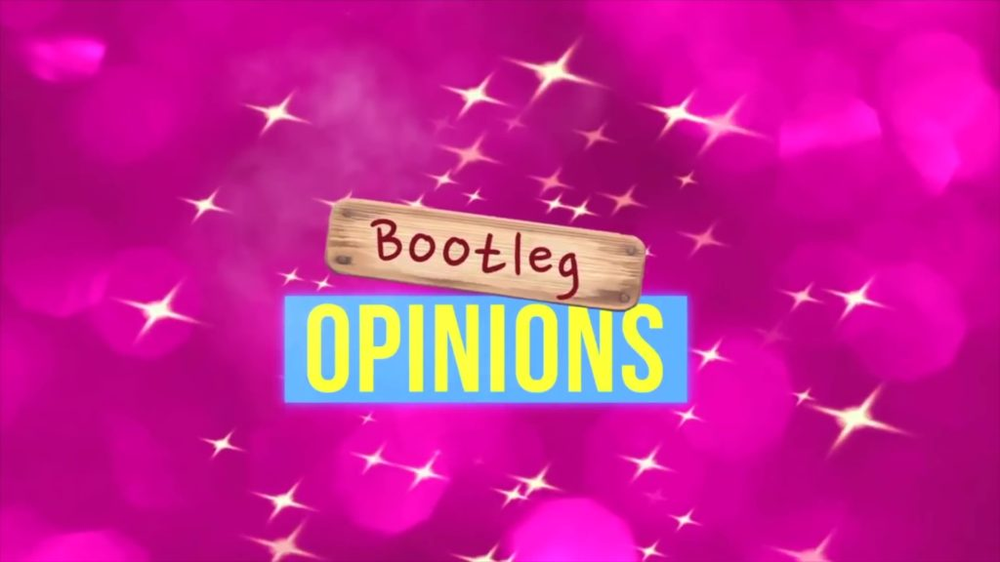
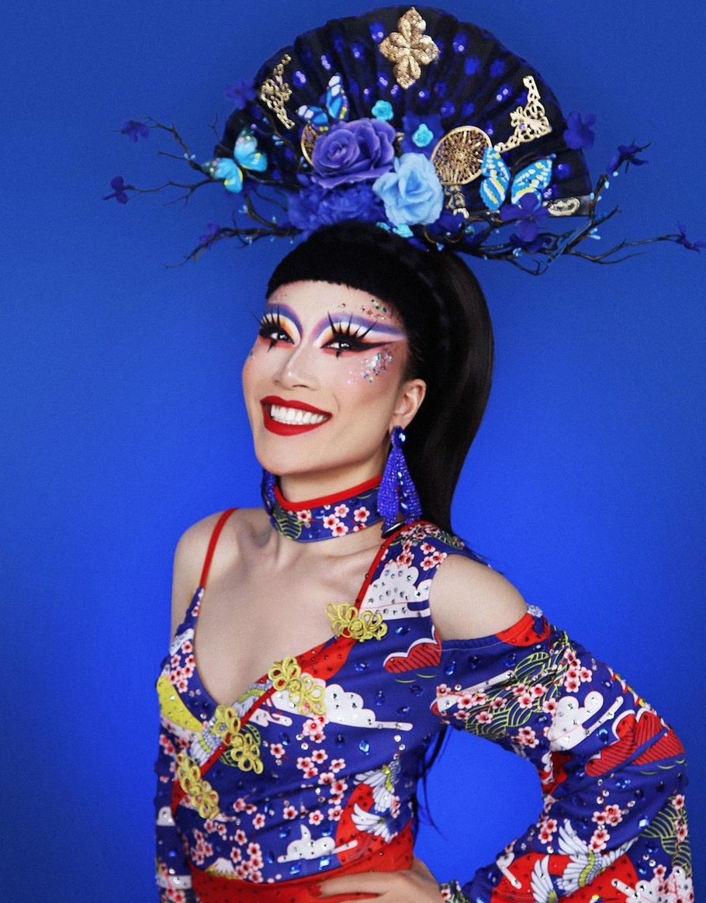

Introducing Yuhua
Star of VH1's "RuPaul's Drag Race" Season 10, Yuhua Hamasaki has been entertaining for almost a decade. Her other roles include VH1's "Big Ang", CW's "The Carrie Diaries", CBS' "Blue Bloods" and "Saturday Night Live" with Katy Perry.
With her bubbly & comedic personality, quick-witted sassy remarks on the microphone, Yuhua delivers high energy performances for audiences around the world.
Recognized for her Asian-themed fashion, she further expresses versatility in her looks. As a costume designer she has created outfits for many drag performers, including previous contestants from RuPaul's Drag Race.
She has been featured on Vogue Italia, The Huffington Post, New York Times, etc. She has also has been named as one of Time Out NY Magazine's favorite queen and "Queen of the Year.
Yuhua is the recently crowned Miss Asia NYC, Miss Gay South Pacific, and a former Miss Fire Island, Miss Stonewall, and Miss Long Island Entertainer of the Year.
Anna Delvey Art Show
.jpeg)
“I’m a masterpiece! I’m a masterpiece! Look at me, I am Anna,” shouted drag queen Yuhua Hamasaki as she riled up the crowd in full Anna Delvey garb at the imprisoned fake heiress’ one-night-only solo art exhibit. Hamasaki’s over-the-top impression of the subject of Shonda Rhimes’ Netflix limited series “Inventing Anna” was just the start of a surreal experience put on by the Founders Art Club and Delvey’s art dealer, Christopher Martine, at New York City’s Public Hotel on Thursday night.
Bootleg opinions
Yuhua is the host of “Bootleg Opinions” where she reviews the looks of Drag Race alumni with guests. Watch the show on her YouTube channel HERE. Special guests include: Trinity The Tuck, Jiggly Caliente, Shuga Cain, Tammie Brown, Phi Phi O'Hara, Dusty Ray Bottoms, Trinity K.
Drag Queen Story Hour
Drag Story Hour (DSH) is just what it sounds like—drag queens reading stories to children. DSH captures the imagination and play of the gender fluidity of childhood and gives kids glamorous, positive, and unabashedly queer role models. In these spaces, kids are able to see people who defy rigid gender restrictions and imagine a world where people can present as they wish, where dress up is real.
Ankh Generator
This Ankh generater will generate up to five Ankhs!
☥ ☥ ☥ ☥ ☥